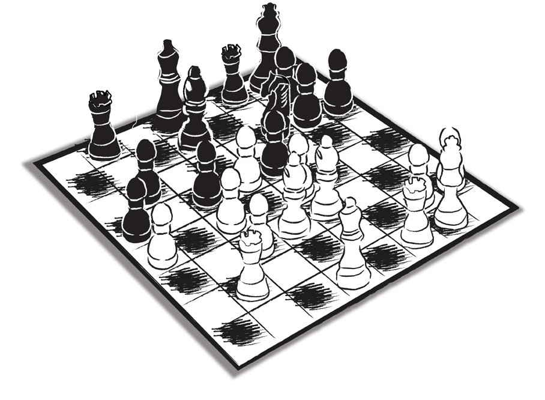

Ne zor seydir dinlemek…
Duymak değil; dinlemek… Hem de aktif dinlemek… Sadece dinlerken ‘aktif dinlediğin’ sanılsın diye başını ‘sizi anlıyorum’ manasına aşağıya yukarıya hafifçe sallamak değil. Gerçekten anlamak için dinlemek. Dinlediğini kaydetmek. Kaydettiğini anlamak. Anladığını işlemek. Alacağın aksiyonlarda kullanmak.
Ne zordur…